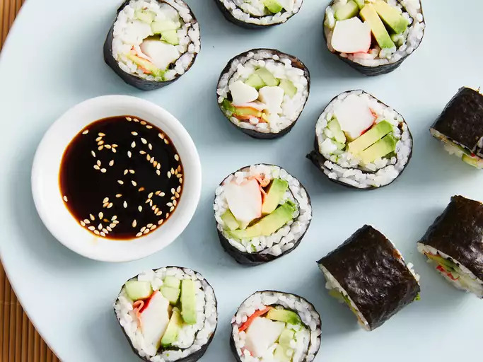

Homemade Sushi

Description
Sushi rolls can be filled with any ingredients you choose. Try smoked salmon instead of imitation crabmeat.
Serve with teriyaki sauce and wasabi. If you do not have a bamboo sushi mat, the easiest way to roll sushi is
with a clean dish towel.
Ingredients
- 1 ⅓ cups water
- ⅔ cup uncooked short-grain white rice
- 3 tablespoons rice vinegar
- 3 tablespoons white sugar
- 1 ½ teaspoons salt
- 4 sheets nori seaweed sheets
- ½ pound imitation crabmeat, flaked
- 1 avocado - peeled, pitted, and sliced
- ½ cucumber, peeled, cut into small strips
- 2 tablespoons pickled ginger
Steps
- Preheat the oven to 300 degrees F (150 degrees C).
- Bring water to a boil in a medium pot; stir in rice. Reduce heat to medium-low, cover, and simmer until rice
is tender and water has been absorbed, 20 to 25 minutes.
- Mix rice vinegar, sugar, and salt in a small bowl. Gently stir into cooked rice in the pot and set aside.
- Lay nori sheets on a baking sheet.
- Heat nori in the preheated oven until warm, 1 to 2 minutes.
- Center 1 nori sheet on a bamboo sushi mat. Use wet hands to spread a thin layer of rice on top. Arrange 1/4
of the crabmeat, avocado, cucumber, and pickled ginger over rice in a line down the center. Lift one end of
the mat and roll it tightly over filling to make a complete roll. Repeat with remaining ingredients.
- Use a wet, sharp knife to cut each roll into 4 to 6 slices.